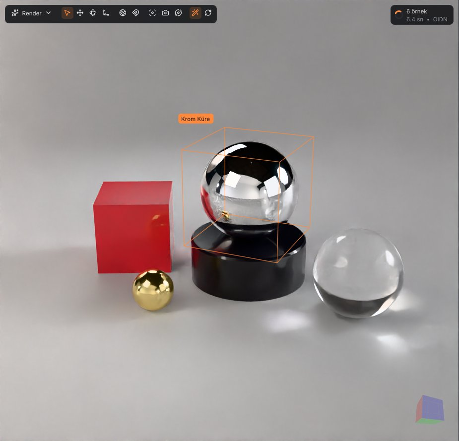

Yol izleme, doğru yapılmış
Işık örneklemesi ve BSDF örneklemesi güç sezgiseli ile birleşir. Owen karıştırmalı Sobol dizisi, ilerlemeli render'da gürültüyü hızlı düşürür.
- NEE, MIS ve Rus ruleti
- Intel Embree 4 kesişimi, yoksa kendi SAH BVH'si
- PBR Nötr, AgX, ACES ve Hable ton eşleme
